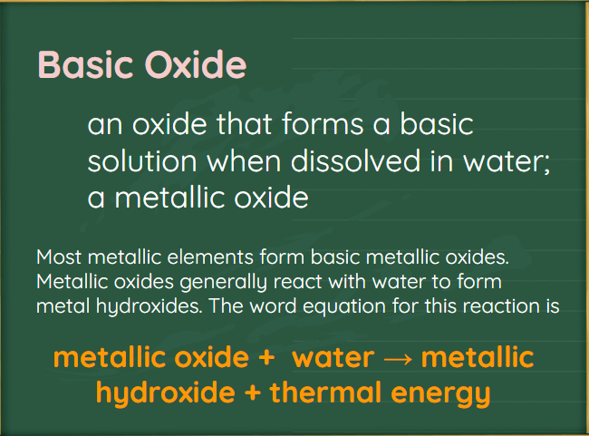

Elements and their oxides
 Things we need to know
Things we need to know
An acid is a substance that produces hydrogen ions in water. These hydrogen ions cause the acidic properties of the solution. Hydrogen chloride is a gaseous molecular compound. When hydrogen chloride is bubbled into water, it forms hydrochloric acid, HCl(aq). This compound breaks down in water to produce hydrogen ions and chloride ions:
HCl(aq) → H+(aq) + Cl2(aq)
A base is a substance that produces hydroxide ions in water. The properties of basic solutions are due to the presence of hydroxide ions. Sodium hydroxide, NaOH(s), is a solid, ionic compound used in drain-opening products. It is a typical base. Sodium hydroxide produces sodium ions and hydroxide ions when it dissolves in water:
NaOH(s) → Na+ (aq) + OH-(aq)
An oxide that forms an acidic solution when dissolved in water; a non-metallic oxide

Sulfur is a solid, yellow non-metal that burns with a blue flame to produce colorless sulfur dioxide gas. Liquid sulfur is dripping into the beaker and solidifying.
Nitrogen Oxides
Oxides of nitrogen contribute to the acidification of rain below its normal pH of 5.6. Some of the nitrogen oxides in the atmosphere form as a result of natural processes like lightning strikes. Most, however, are the by-product of the combustion of fuels.
Normally, most of the nitrogen in the atmosphere is made up of the diatomic N2 molecule and is stable and unreactive because of its triple bond.


Many metals form oxides simply by being exposed to the air. A freshly cut piece of sodium, for example, tarnishes in a matter of seconds to form a coating of sodium oxide:


Sodium hydroxide is one of the most widely used industrial chemicals. Its applications include the production of detergents and paper. Adding sodium oxide to water produces sodium hydroxide, a base